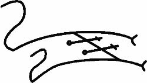

Ve AKHKHARU İşareti bilinirse çağrılabilir ve o budur:

Ve İnsanların yaşadıkları yerlere dadanan, aynı zamanda İnsan gibi olmaya çalışan- ama Rahip delilik içinde ıstırap çekmesin ve öldürülmesin ve içindeki Ruhun defedilmesi gereken, çünkü o Kötüdür ve yalnızca dehşet saçar ve ondan hiçbir iyilik gelmez, canlı bir LALASSU’ya dönüşmesin diye bunlar söylenmemelidir- bir LALASSU da çağrılabilir. O da, bir zamanlar yaşayan ve birinden diğerine Giriş arıyorken Dünyalar arasında kalan LALARTU’ya benzer ve aynı ailedendir. Ve onun Bu dünyaya girmesine izin verilmemelidir, çünkü o hastalıklı bir bünyeye sahiptir ve Hastalığın ve Sefaletin Kraliçesi LAMASHTA gibi doğum yapmakta olan anneleri öldürür.
Ve bu Varlıkların çağrılması için kullanılacak İşaretler bunlardır, eğer Rahibin onlara ihtiyacı olursa, ama bil ki bu yasal değildir: